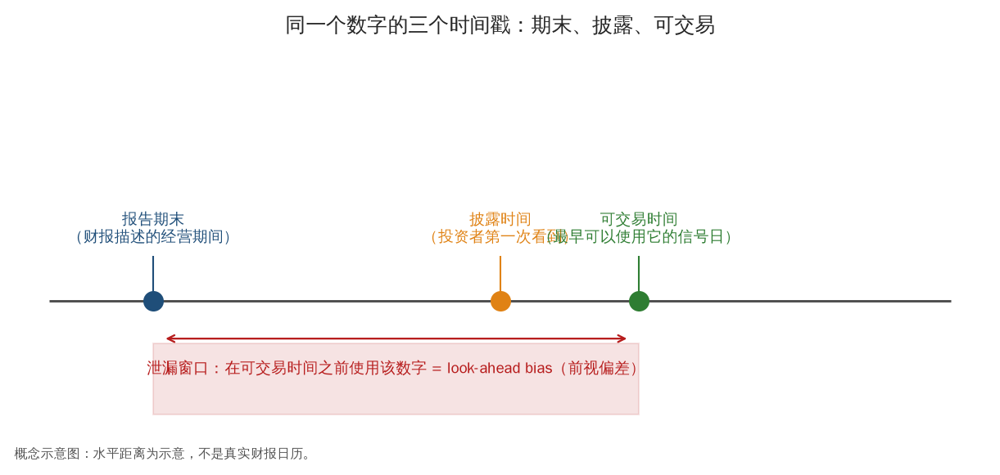
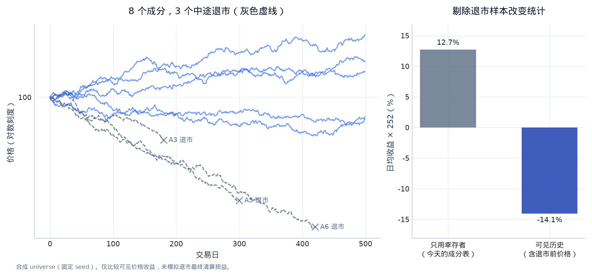
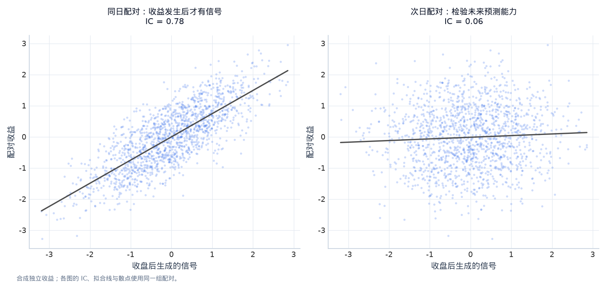
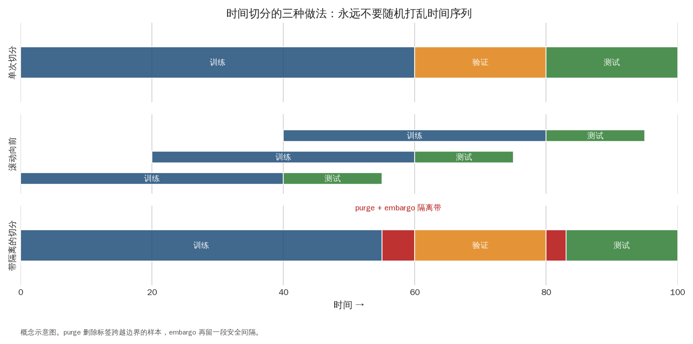
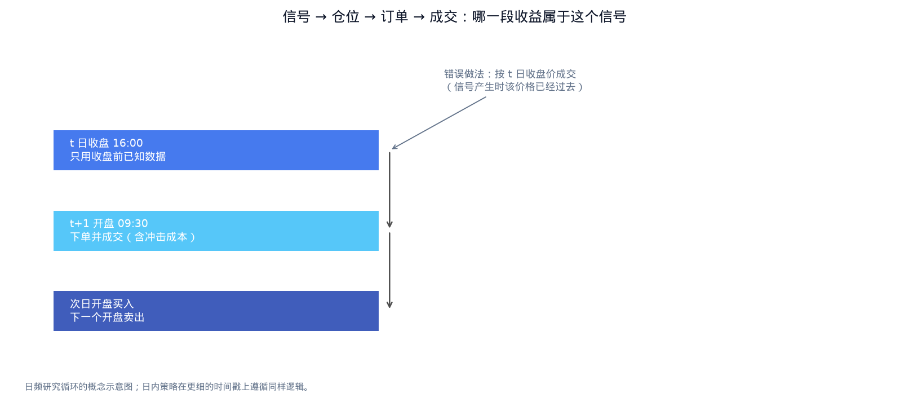

第四章：从财报公告到一笔可归属的收益¶
一家公司在周一盘后公布了增长 20% 的季度利润。你读到公告，周二开盘买入，周三开盘卖出。假如股价在周一收盘到周二开盘已经涨了 8%，这 8% 属于你的策略吗？如果数据库把这份财报标成“3 月 31 日”，能否从 4 月 1 日开始使用？如果周四又把利润下修了，周二的历史信号应不应该跟着改变？
这三个问题可以让一个漂亮的研究结果消失。本章从两家公司的几条教学财报记录出发，逐步生成特征、标签、仓位和研究结论。贯穿全章的规则只有一句话：每天收盘后，从当时已经收到的财报中选利润增长最高的公司，增长超过 10% 才买入，在次日开盘成交，持有到再下一日开盘。 我们研究的是这条规则怎样被诚实表达，而不是这条规则是否值得投资。
0. 学习目标与问题边界¶
读完后，你应能从一行原始记录追踪到一笔收益，解释为什么观察期、公开时间、系统收到时间和成交时间必须分别保存；能构造时点可见的数据集，处理修订、缺失和历史成员；能判断标签何时成熟、训练边界怎样裁剪；能把一个候选规则交给独立的人复现。
本章默认你已经理解相关性、回归和样本外评估。这里的重点是金融研究中的时间语义：统计模型再正确，也不能替我们修复一条在决策时根本不可见的数据。全部代码只用 Python 标准库，数据完全是人为构造的，不联网、不需要行情文件。后面的图含有独立的概念示例；它们用来展示同类问题，不应当与主线的两家公司混成同一批数据。
1. 先写出一笔交易，再写研究假设¶
把“利润增长能预测股价吗”改成可执行的陈述，需要确定何时观察、交易谁、赚哪段收益和与谁比较。主线中，资产宇宙（universe）是历史上可交易的 A、B 两家公司，决策时间固定为交易日 16:10。这里把普通交易时段简化为 09:30 到 16:00，所有时间都采用同一时区；它是教学市场，不代表某家交易所的完整日历。
特征（feature）是最新季度每股利润相对上一季度的增速。它是一条输入信息，而不是“买入”的命令。信号（signal）是根据特征给出的排序或方向。本例按增速排序，只允许最高者在增长严格超过 10% 时持有。目标仓位（target position）是希望账户持有的资产比例；主线为一只股票 100% 或现金 100%。订单（order）是从现有仓位走到目标仓位的交易指令。成交（fill）才会改变真实持仓。先定义这些对象，可以避免后来把“知道了一个好消息”直接等同于“已经按好价格买到”。
标签（label）回答信号希望预测的结果。本例的标签是次日开盘买入到再下一日开盘卖出的简单收益。基准（benchmark）也必须走相同时间轴：我们使用 A、B 各 50% 的每日等权组合，按相同的开盘区间记账。基准不是“零收益”这个方便的对手，而是一个不依靠财报选股也能持有的替代方案。现金在这个很短的教学区间中暂按零利息处理。
假设不是“最后净值必须上涨”，而是：在上述可见信息和执行约定下，利润增长排序是否提供了相对等权基准的增量？这句话还不是统计结论。六七个交易日只够帮助我们核对逻辑，无法估计策略的长期收益、尾部风险或显著性。
2. 同一个利润数字，为什么有四种时间¶
A 的一季度在 3 月 31 日结束。这是观察期（observation period）：数字描述哪一段经济活动。4 月 20 日 18:00 公告发布，这是公开时间（publication time）。数据系统 18:05 收到公告，这是接收时间（ingestion time）。再预留 15 分钟进行解析和质量处理，18:20 才成为本系统可用时间（available time）。在周一 16:10 的决策里，这份公告仍然不存在。
本章把可用时间定义成公开时间和接收时间较晚者，再加处理延迟。这一规则同时挡住两类错误：供应商记录的接收时间不可能让我们早于公告获知消息；公告已经公开也不意味着我们的系统已经拿到并解析完毕。若你的研究假设改为直接读取交易所原始公告，接收和处理规则可以更快，但必须真的具有相应的数据与系统。
时点可见（point-in-time）是对问题“站在这个历史时刻，系统可以知道什么”的回答。它不是把数据表按日期排序就自动得到的属性。一条记录还需要有版本号：A 初次披露一季度利润为 1.20，后来修订为 1.05。数据库必须同时保留两个版本，才能在修订前看到 1.20、修订后看到 1.05，而不是让最终值反向覆盖历史。
图 4-1 把这段时间关系画成一条线。请特别注意：即使已经到了公开时间，也还没有自动获得图右侧的成交价格。交易时段、处理延迟、停牌和订单撮合仍然可能把实际成交推迟。

图 4-1｜一个数字的三个时间戳。 报告期末、披露时间和最早成交时间回答不同问题。披露前使用该数字会泄漏未来信息；披露后还应计入处理、下单与成交时延，不能直接假设按先前价格成交。数据类型：时间间隔为概念示意。
from datetime import datetime, date, time, timedelta
from zoneinfo import ZoneInfo
TZ = ZoneInfo("Asia/Shanghai")
def ts(value):
return datetime.fromisoformat(value).replace(tzinfo=TZ)
def report(asset, period, eps, published, received, version):
public_at, received_at = ts(published), ts(received)
return {"asset": asset, "period": period, "eps": eps,
"public_at": public_at, "received_at": received_at,
"available_at": max(public_at, received_at) + timedelta(minutes=15),
"version": version}
# 单位：每股利润，教学货币/股；同一期间的不同版本保留为不同行。
raw_reports = [
report("A", "2025Q4", 1.00, "2026-04-17 12:00", "2026-04-17 12:02", 1),
report("B", "2025Q4", 2.00, "2026-04-17 12:00", "2026-04-17 12:03", 1),
report("A", "2026Q1", 1.20, "2026-04-20 18:00", "2026-04-20 18:05", 1),
report("B", "2026Q1", 2.50, "2026-04-21 08:00", "2026-04-21 08:04", 1),
report("A", "2026Q1", 1.05, "2026-04-23 12:00", "2026-04-23 12:03", 2),
report("B", "2026Q1", 2.10, "2026-04-23 18:00", "2026-04-23 18:03", 2),
]
sessions = [date(2026, 4, d) for d in [20, 21, 22, 23, 24, 27, 28]]
open_prices = {
"A": [100.0, 108.0, 109.0, 107.0, 106.0, 108.0, 109.0],
"B": [50.0, 50.5, 51.5, 51.0, 49.0, 50.0, 51.0],
}
for record in raw_reports:
print(record["asset"], record["period"], record["eps"],
record["version"], record["available_at"].isoformat())
3. 数据字典：每一列都要能回答经济问题¶
每股利润（earnings per share，EPS）是利润除以相应股数后的指标。它不是现金余额，也不是投资者一定能收到的股息。本例为了突出时间问题，假定两家公司的口径一致、股数没有变化，上一季利润均为正。现实里基本每股利润与稀释每股利润不同，股份拆分、会计口径变化和一次性收益也会改变可比性；比较之前必须先决定所用口径。
增长率采用 \(g=E_1/E_0-1\)。其中 \(E_1\) 是在决策时最新可用的一季度 EPS，\(E_0\) 是当时可用的上一季度 EPS，\(g\) 是无量纲的小数。A 的初次版本给出 \(1.20/1.00-1=0.20\)，也就是 20%。这里的“20%”不是股票回报，只是一个会计指标的变化。如果 \(E_0=0\)，公式不能使用；若 \(E_0<0\)，亏损缩小也可能得到容易误解的增长率。主线遇到这两种情况时返回缺失，不把它们强行排名。真实研究也可以改用利润差除以总资产等更稳的口径，但这是另一个明确的特征定义。
| 字段 | 含义与单位 | 影响哪一步 |
|---|---|---|
asset |
稳定证券标识，不直接使用会改名的简称 | 决定历史上究竟是哪一只证券 |
period |
利润所属会计期间 | 区分本季度和比较季度 |
eps |
教学货币/股 | 计算增长，不直接当成可成交价格 |
public_at |
带时区的公开时刻 | 限制最早可能获知的时刻 |
received_at |
本系统实际收到时刻 | 表达供应商和链路延迟 |
available_at |
满足公开、接收和处理条件的时刻 | 决定是否进入当日信息集 |
version |
同一公司、同一期间的发布版本 | 选择截至决策时最新可用的版本 |
这张表就是数据字典（data dictionary）的最小形式。数据契约（data contract）比字典多一步：它约定什么记录可以进入下一层。比如时间戳必须带时区、价格必须为正、证券标识不得为空、同一版本不得冲突。契约失败时应让该批数据停在入口，或按已经约定的缺失策略处理，而不是悄悄填出一个“看起来合理”的数字。
不要把缺失与零混在一起。尚未公告的一季度 EPS 是“不知道”，不是“利润为零”；尚无足够两个季度的比较数据，增长率也是缺失。零增速意味着已经观察到两个相等的数字。这三种状态有不同的经济含义，直接 fillna(0) 会把“尚未知晓”伪装成“明确没有增长”。
4. 按决策时刻重建特征：先筛可见版本，再算增长¶
时点连接（as-of join）通常用专门的表连接工具完成，原理却很简单：先删除可用时间晚于决策时刻的记录；再对每个公司和会计期间，保留已经可见的最新版本；最后才计算特征。本例版本号由源文件定义，已经可见的记录按源版本而非到库先后选择；迟到的旧版本不能覆盖已知修订。顺序不可交换。若先拿最终版本算完增长，再把结果平移一天，修订值仍然已经渗透进过去。
主线里，4 月 20 日 16:10 只有两家公司的上一季度数据，一季度增长都不可得，所以空仓。4 月 21 日 16:10，A 的 20% 和 B 的 25% 都已可见，选 B。4 月 23 日 16:10，A 午间修订已可见，增长降为 5%；B 盘后修订尚未发生，仍按 25% 参与排序。到 4 月 24 日，B 才变成 5%，没有公司超过 10%，目标转回现金。
下面没有把“季度结束”作为连接键，也没有把 4 月 23 日整天当成一个没有先后顺序的日期。若同一交易日既有午间修订又有盘后修订，精确到日的表无法表示两者的不同决策含义。需要日内时间戳时，保留它比添加更复杂的模型有价值得多。
def latest_reports_asof(records, decision_at):
chosen = {}
for record in records:
if record["available_at"] > decision_at:
continue
key = (record["asset"], record["period"])
old = chosen.get(key)
order = (record["version"], record["public_at"])
if old is None or order > (old["version"], old["public_at"]):
chosen[key] = record
return chosen
def growth_asof(records, decision_at, asset):
visible = latest_reports_asof(records, decision_at)
previous = visible.get((asset, "2025Q4"))
current = visible.get((asset, "2026Q1"))
if previous is None or current is None or previous["eps"] <= 0:
return None
return current["eps"] / previous["eps"] - 1
features = []
for day in sessions:
decision_at = datetime.combine(day, time(16, 10), TZ)
values = {a: growth_asof(raw_reports, decision_at, a) for a in ["A", "B"]}
eligible = [(g, a) for a, g in values.items() if g is not None and g > 0.10]
# 分数相同则按稳定标识排序，避免结果依赖输入行顺序。
selected = sorted(eligible, key=lambda pair: (-pair[0], pair[1]))
features.append({"day": day, "decision_at": decision_at,
"growth": values, "selected": selected[0][1] if selected else None})
for row in features:
shown = {a: None if g is None else round(g, 3) for a, g in row["growth"].items()}
print(row["day"], shown, "目标:", row["selected"] or "现金")
5. 清洗怎样改变研究对象：成员、复权和陈旧价格¶
假设 B 后来经营失败并退市。如果从今天的证券列表出发，B 会被整个删除，刚才几笔买入 B 后遭遇下跌的历史也会消失。这就是幸存者偏差（survivorship bias）：样本能否被保留下来，取决于研究结束以后发生的结果。正确的证券主表（security master）需要保存上市、退市、改名、代码变化和历史成分关系；当时可以买的 B 必须在当时的候选集合里，即使今天已不存在。
图 4-2 用更多公司展示这种样本选择。它没有替我们解决退市收益：最后一个交易日的收盘价，可能与最终现金清算价值相差很远。不能把退市后价格缺失直接当成“以后收益为零”。应明确采用最终支付、可得的退市回报或保守的损失假设，并报告无法确认的部分。

图 4-2｜幸存者偏差是一个水平位移。 8 个合成成分中有 3 个中途退市，灰色虚线仅画到最后可见价格。右图比较日均收益乘 252：本例中，排除退市前的下跌历史会抬高统计值。图中未模拟退市清算损益，也不是完整投资组合回测。数据类型：固定 seed 合成价格。
主线只有一份没有拆股、分红的价格表，因此 open_prices 同时可以用于收益和成交。真实股票通常做不到。拆股会改变每股价格和股数，现金分红会让除息价格下降，同时投资者收到现金。用未调整价格直接算收益，会把拆股当暴跌；用含未来复权因子的历史价格决定当时能买几股，也可能给出不真实的股数和现金需求。研究层可以使用口径明确的总回报序列，执行层仍要用当时实际报价，并单独记股份变化和现金流。
前向填充（forward fill）也必须有适用条件。公告型特征在新公告前继续沿用旧值，通常是在表达“最新已知信息”；停牌股价格连续不变，则是在表达“没有新成交”，不能解释成风险消失。如果先把停牌价格填满，再按很低的历史波动给它更大权重，会把不可交易性包装成安全性。主线的下一步若找不到开盘价，就应记录无法成交，而不是向后找一个价格再假装当天已经买入。
类似地，异常值不一定是错误。B 一天跌 20% 可能来自真实坏消息。把所有极端收益截成 3% 会直接抹掉策略风险。应该先区分价格单位错、重复复权、坏报价与真实事件，再决定是否更正；对无法确认的记录，保留原始值并让处理规则显式决定是否暂停交易。数据清洗的目标是忠实表达经济事实，不是使曲线光滑。
6. 一天的错位，足以让收益的主人换人¶
前视偏差（look-ahead bias）指决策使用了当时尚不可知的信息。它既可以来自财报版本，也可以来自收益区间。A 在 4 月 20 日盘后公告，4 月 21 日开盘价格从 100 跳到 108。即使我们设想有一条盘后立即决策的规则，它最早在 21 日开盘买入，也只能赚到 22 日开盘 109 相对 108 的变化；公告导致的前 8% 已经发生在买入之前。
图 4-3 展示另一个常见错误：用当天完整收益作为信号，再问它能否解释当天收益。统计相关性可以很高，但问题已经从“预测以后”变成了“描述刚才”。将数组统一 shift(1) 并不保证正确，必须先知道每一行的时间含义。发布在盘前的财报、发布在盘后的财报和日末收盘价具有不同的合法交易时点，不能靠一次机械平移替代逐项推理。

图 4-3｜对齐错了会制造假 IC。 信号含有当天收盘收益，左图把它与同日收益配对，得到很高但不可交易的相关性。右图用同一信号预测次日独立收益，相关性接近零。散点、拟合线与 IC 均由各面板实际显示的配对计算。数据类型：固定 seed 合成独立收益，不代表真实信号。
7. 标签是一个未来区间，不是某一行日期¶
用 \(d\) 表示决策日，\(o(d)\) 表示它后面的第一个交易日开盘，\(e(d)\) 表示再后一个交易日开盘。本例标签为
其中 \(i\) 是公司，\(P^{\mathrm{open}}\) 是实际开盘报价，\(y\) 是持有区间的简单收益。决策时间、标签起点和标签终点是三个独立字段。标签只有在 \(e(d)\) 的价格已经可见后才成熟；到 4 月 24 日下午，你无法把需要 4 月 28 日价格的标签拿来训练模型。
下面的代码为每次决策构造两个资产的标签，最后两个决策日没有足够未来价格，因而不出现在已成熟样本中。这种“尾部没标签”是正常的，不应该用零补上。相反，特征仍可以被计算并用于真正的未来决策。训练数据是否有标签，与实时系统是否能产生预测，是两件不同的事。
samples = []
for j, feature in enumerate(features[:-2]):
entry_at = datetime.combine(sessions[j + 1], time(9, 30), TZ)
exit_at = datetime.combine(sessions[j + 2], time(9, 30), TZ)
future_return = {
a: open_prices[a][j + 2] / open_prices[a][j + 1] - 1
for a in ["A", "B"]
}
samples.append({**feature, "entry_at": entry_at, "exit_at": exit_at,
"label_known_at": exit_at, "future_return": future_return})
for row in samples:
print(row["day"], row["entry_at"].date(), "->", row["exit_at"].date(),
{a: f"{r:.2%}" for a, r in row["future_return"].items()})
8. 从可见特征走到收益账本¶
将标签乘以权重之前，先约定组合如何跨期衔接。主线每天开盘把持仓调到上一交易日决策的目标，并持有到下一开盘。相邻区间首尾相接；如果连续两天都选 B，就继续持有，而不是无端先卖再买。目标变成现金时才卖出。用这种约定，换手（turnover）可以用新旧目标权重差的绝对值之和近似：从现金买入 B 是 1，从 B 转到 A 是 2，不动是 0。
这里使用固定权重近似，暂不扣除价格漂移带来的小额再平衡，因而不是逐股现金账本；第六章会把这一步展开。单边交易成本设为 5 个基点，基点（basis point，bp）等于万分之一，5 bp 等于 0.05%。买入和卖出各算一次。若从 B 换成 A，成本约为账户权益的 0.10%，不是 0.05%。
以 \(w_{i,d}\) 表示决策日为下一开盘区间选定的权重，\(c\) 表示单边每单位成交名义金额的费率，本例的净区间收益近似为
第一项是已买到持仓的价格收益；第二项是开仓和调仓成本。现金权重不列入股票换手；否则会把同一笔从现金买股票的交易数两次。样本末端还要说明是否清仓，本例在最后一个已成熟区间末端清仓并扣费，从而比较完整持仓周期。
def target_weights(selected):
return {a: float(a == selected) for a in ["A", "B"]}
def run_backtest(rows, cost_bps=5.0, equal_weight=False):
old = {"A": 0.0, "B": 0.0}
wealth, ledger = 1.0, []
for row in rows:
new = {"A": 0.5, "B": 0.5} if equal_weight else target_weights(row["selected"])
turnover = sum(abs(new[a] - old[a]) for a in new)
gross = sum(new[a] * row["future_return"][a] for a in new)
cost = cost_bps * 1e-4 * turnover
net = gross - cost
wealth *= 1 + net
ledger.append({"decision": row["day"], "entry": row["entry_at"].date(),
"exit": row["exit_at"].date(), "weights": new,
"turnover": turnover, "gross": gross, "cost": cost,
"net": net, "wealth": wealth})
old = new
terminal_cost = cost_bps * 1e-4 * sum(abs(w) for w in old.values())
wealth *= 1 - terminal_cost
return ledger, wealth, terminal_cost
ledger, strategy_wealth, liquidation = run_backtest(samples)
_, benchmark_wealth, _ = run_backtest(samples, equal_weight=True)
for row in ledger:
print(row["entry"], row["weights"],
f"毛收益={row['gross']:.3%}, 成本={row['cost']:.3%}, 净收益={row['net']:.3%}")
print(f"期末策略净值={strategy_wealth:.5f}, 等权净值={benchmark_wealth:.5f}")
print(f"末端清仓成本={liquidation:.3%}")
回看第一笔可交易的非零信号：4 月 21 日选 B，4 月 22 日开盘以 51.5 买入，23 日开盘价格为 51.0，毛收益约为 -0.971%。B 的利润增长高于 A，但股票下一段收益仍可能为负。财报不是股价的机械按钮：价格可能早已反映预期，市场还会同时处理折现率、风险和其他消息。数据管线保证的是这个亏损被正确记录，而不是把亏损变成盈利。
这个回测仍假设开盘价附近能完全成交，没有开盘集合竞价参与限制、买卖价差、部分成交、借贷或价格冲击。5 bp 是透明的教学成本，不是经过交易数据估计的真实报价。它足以暴露“换一次股票要付两边成本”，不足以证明策略可执行。图 4-5 会再次把信号到成交的时间链连起来；在讨论切分前，我们先把每条标签真正使用的价格区间记牢。
主线的净值低于 1，说明这几次合法成交整体亏损；等权净值略高于 1，说明同一批资产与相同区间内，财报排序没有在这张教学表上提供增量。这里不应计算一个夸张的年化收益或宣称“财报因子失效”：五个区间没有足够统计信息，价格也是手写的。我们能下的结论只有时间链与损益账本对应正确，以及这个特定例子的收益差确实存在。
9. 切分的是信息流，不只是日期行数¶
训练集（training set）用于估计参数，验证集（validation set）用于选择窗口、阈值和模型，测试集（test set）用于在规则冻结后估计新数据表现。即使本章只有一个 10% 阈值，也可以过拟合：看到 B 下跌后改成 30%，再把空仓结果宣布成策略改进，实际上已经用结果决定规则。看过的时期不会因为重新命名为“测试集”就恢复独立性。
如果在 4 月 23 日 09:00 重训，只能使用到这个时刻已经成熟的标签。4 月 20 日决策的区间在 22 日 09:30 结束，可以用于训练；21 日决策要用 23 日 09:30 的价格，09:00 尚不知道，因此不能进入训练。下面直接比较标签成熟时间，而不是只判断决策日期早于重训日。
滚动前推（walk-forward）把这条规则反复应用：用过去可见且成熟的数据拟合，冻结参数，在接下来一个窗口预测，窗口结束后再更新。扩展窗口保留全部过去数据，样本更多但旧制度可能过时；固定长度滚动窗口丢弃更早历史，更能适应变化但估计更不稳定。主线样本太短，不实际拟合模型，只展示某一重训时刻可合法使用的记录。
retrain_at = ts("2026-04-23 09:00")
trainable = [row for row in samples
if row["decision_at"] < retrain_at and row["label_known_at"] < retrain_at]
pending = [row for row in samples
if row["decision_at"] < retrain_at and row["label_known_at"] >= retrain_at]
print("可用于这次拟合的决策日:", [r["day"].isoformat() for r in trainable])
print("决策虽已发生、标签尚未成熟:", [r["day"].isoformat() for r in pending])
标签去重叠（purging）解决另一个边界问题。若将标签改为未来五个开盘区间，靠近验证边界的训练样本就可能借用了验证期价格。应删除标签区间跨入验证区间的训练记录。判断依据是区间是否交叠，而不是“所有任务统一删最后五行”；不规则事件、停牌和不同持有期会让固定行数失效。
禁入间隔（embargo）是在评估区间附近额外留出一段不用于拟合的时间。它通常出现在允许训练数据位于测试段之后的交叉验证设计里，用于降低相邻样本的路径依赖；严格只用过去预测未来的滚动前推，首先应处理标签成熟和边界交叠，是否还需要额外间隔取决于特征窗口与任务依赖。留出几天不会神奇地消除所有相关性，更不会修复已经使用最终修订数据的特征。
图 4-4 展示三种常见切分方式。图中的安全间隔应理解为需要根据标签和信息依赖来定义的设计选择，而不是可以照抄的固定长度。我们已经保存了 decision_at、entry_at、exit_at 和 label_known_at，因此把主线扩展到五日持有时，不需要凭猜测寻找应当删掉的边界样本。

图 4-4｜三种切分，一条规则：不打乱时间。 第一行是最简单的训练/验证/测试切分；第二行是 walk-forward，训练窗滚动、测试窗跟随；第三行在边界加入 purge（删除标签跨边界的样本）与 embargo（安全间隔）。三者都保持时间顺序。数据类型：概念示意图。
10. 回到事件顺序：什么时候数据会改变，什么时候钱会改变¶
到这里，可以把主线的一次日循环写成完整句子：16:10 读取已经可见的财报版本，算增长并选目标；下一交易日 09:30 提交并按教学假设成交；更新股票与现金；再下一开盘完成本区间记账。财报修订改变的是修订后新决策的信息集，不是过去已经买过的股票数量。成交失败改变的是实际持仓，不是原始信号分数。
图 4-5 的交易区间与主线一致。即使公告在决策后很快出现，也不能把它塞回当天 16:10 的快照；如果改为每小时决策，必须相应重建快照、价格和执行模型。采样频率是研究规则的一部分，不是让结果更好看的绘图选项。

图 4-5｜哪一段收益属于这个信号。 本图约定：信号在 \(t\) 日收盘后生成，\(t+1\) 日开盘买入，\(t+2\) 日开盘卖出。该笔持仓的毛收益为 \(P^{\mathrm{open}}_{t+2}/P^{\mathrm{open}}_{t+1}-1\)，不含买入前的隔夜收益。项目中的简化收盘到收盘回测须按其独立约定理解。数据类型：成交时间概念示意。
11. 从可运行代码到可复现的研究证据¶
原始层（raw layer）保存收到的发布记录和原始文件，不用最新修订覆盖旧值。标准化层统一时区、证券标识和单位。特征层只回答历史时点可见的增长是多少。信号层执行阈值与排序。组合和执行层记录目标、订单、成交、现金。评价层把收益与基准、换手和成本放在一起。这种分层不是目录装饰：如果改 EPS 口径，只需从标准化或特征层重算；如果改手续费，不应重新定义财报增长。
本章代码的函数也按这个边界组织。growth_asof 接收记录与决策时刻，返回特征；run_backtest 接收已经对齐的样本与成本参数，返回账本。函数没有到处读取隐藏的全局“最新结果”，因此另一位研究者可以把某个输入换掉并观察哪些输出应当改变。真实项目还要把日历、证券主表和配置作为显式输入。
可复现（reproducibility）意味着同一份数据版本、代码版本、环境和配置能够重建同一结果。只有随机种子不足以做到这一点：如果供应商昨天修订过财报，今天用相同种子下载，输入已经不同。应保存数据快照、内容摘要、接收日期、版本口径、依赖版本以及完整配置。内容摘要可以发现文件是否变化，不能证明数据在经济意义上正确；仍需检查证券身份、时间和单位。
选择偏差（selection bias）还会发生在研究过程里。只保留盈利的市场、删掉坏年份或只展示赢过基准的阈值，都改变了你实际回答的问题。多重尝试（multiple testing）意味着试过的窗口与特征越多，偶然漂亮的结果越常见。解决方式不只是换一种显著性公式：先限定经济假设与候选范围，保留所有尝试，再用真正未参与选择的数据估计表现。短小的教学表无法承担这个任务，应明确把它定位为时间链演示。
一份研究备忘录应让读者自然复述主线：为什么利润增长可能包含尚未消化的信息；用的是哪种 EPS、什么历史版本；16:10 到次日开盘怎样成交；相对等权增量是多少；成本提高和延迟一天时怎样变化；哪些公司或事件贡献结果；缺失、停牌和修订如何处理；下一次新数据验证具体要观察什么。不是每一项都必须给出乐观答案，但每一项都必须有明确口径。
12. 常见误解：沿主线逐一定位¶
“所有财报都平移一天就安全。” 平移一天无法还原旧版本，也无法区分盘前和盘后。应先按精确可用时间重建快照，再按交易日历决定成交。
“修订值更准确，所以历史都应替换。” 修订值可能更接近最终经济事实，适合研究最终利润；模拟历史决策需要当时版本。两个研究对象不同，不能共享一个含混的字段。
“代码运行成功说明研究可信。” 一段使用报告期末连接的代码也能完整运行。可信度来自时间、身份、单位、标签与账本相互一致，以及样本外和成本证据，而不是没有报错。
“缺失值越少越好。” 在 A 尚未公告时留下缺失，是对历史事实的忠实表达。向过去回填未来公告，会让数据更整齐，却让历史不可交易。
“亏损说明数据管线失败。” 主线中 B 的负收益正是合法数据与执行约定下应保留的结果。管线应让假设有机会被证伪，而不是保障某个故事成立。
13. 手工练习¶
练习一：给一条修订找正确的位置¶
B 的修订在 4 月 23 日 18:00 发布、18:03 收到，处理需 15 分钟。请写出它何时可用、23 日 16:10 决策采用哪个值、24 日 16:10 采用哪个值。若供应商把接收时间误记为 17:55，最早可用时间能否早于 18:00？
参考答案
正常情况下可用时间是 18:18。23 日 16:10 尚未看到修订，采用 EPS 2.50，增长 25%；24 日采用 2.10，增长 5%。若接收时间是 17:55，仍需取公开与接收中较晚的 18:00，再加处理延迟，所以最早为 18:15。该矛盾时间戳还应被记录为数据质量问题，不能用它获得提前知情能力。
练习二：决定一笔收益属于谁¶
4 月 21 日收盘决策选 B。22 日开盘 51.5，23 日开盘 51.0。之前空仓，成本单边 5 bp；下一次仍选 B。计算第一个区间毛收益、交易成本和净收益。第二个区间是否必然再收一买一卖的费用？
参考答案
毛收益为 \(51/51.5-1\approx-0.9709\%\)。从现金买入，换手为 1，成本 0.05%，近似净收益为 -1.0209%。下一次仍持 B 时，固定权重教学模型的换手为零，不应虚构一次卖出再买入。真实的 100% 股票持仓也无需为维持 100% 股票比例再交易；若是多资产固定权重，价格漂移可能产生小额再平衡。
练习三：五日标签跨越边界¶
某训练样本 6 月 10 日决策，6 月 11 日开盘入场，6 月 18 日开盘结束。验证区间从 6 月 16 日开始。能否仅因为决策发生在验证开始之前就保留该训练样本？应依靠哪两个字段判断？
参考答案
不能。该样本标签使用了验证区间内的价格，训练与验证的信息区间交叠。至少需要入场和退出时间，并结合验证区间边界判断交叠；在真实滚动拟合时，还需检查标签成熟时间早于拟合时刻。按决策日期切表无法表达这些条件。
14. 自测与思考¶
- 将 A 的最终修订利润改成 0.8，哪些历史特征应改变，哪些不应改变？
- 若研究者今天只下载 A 的历史价格，为什么无法研究原来的两家公司策略？
- 何时可以前向填充财报特征，何时不能把前向填充价格解释成真实可成交价？
- 将主线改成盘后立即决策，需要新增哪些数据和执行假设？
参考答案
- 仅修订变得可见后的特征改变，修订前仍保留 1.20；若过去信号也变了，说明混用了最终版本。
- 资产宇宙已经改变，B 的交易、收益和机会集合被删除，新的结果不能代表原规则。
- 旧公告在新公告前仍是最新已知信息，可以在有效期内沿用。没有成交的停牌价格只能用于约定的估值，不能保证存在买卖对手；还应限制陈旧时长。
- 需要盘后市场是否开放、可参与的资产、盘口和流动性、消息接收与解析延迟、订单类型、真实成交与未成交规则。不能只把决策时钟改成 18:20 而继续享用日间收盘价。
15. 本章小结¶
一条利润数据先有观察期，再有公开、接收和处理后的可用时间；它在某次决策里形成特征，经过交易日历与执行假设，最后才对应一段实际持有收益。主线最重要的产物不是期末净值，而是一条能逐项回答“当时知道什么、何时买到、赚哪段变化”的记录链。
把修订前后的版本分开，把历史成员留在当时的宇宙里，把标签当成有起止时间的区间，把目标与成交分开记账，这些选择使后续统计分析有了可靠的对象。下一章会把财报选股替换成多资产动量；信息可见、信号映射、基准和成本这四个问题会继续跟随每一步。